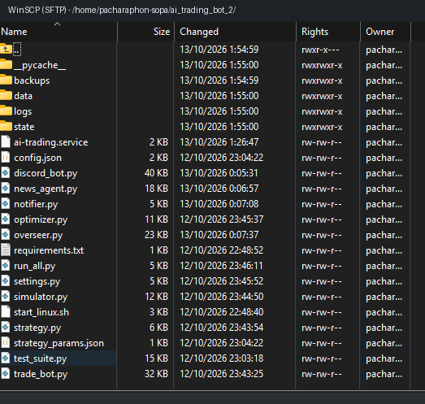
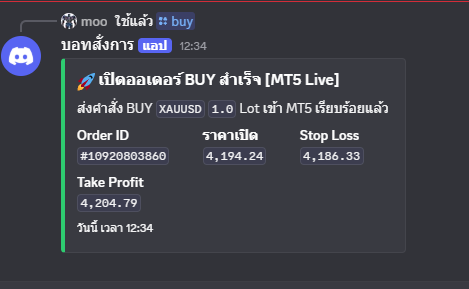
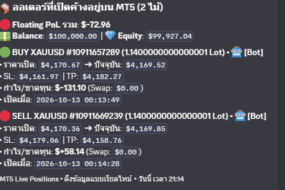
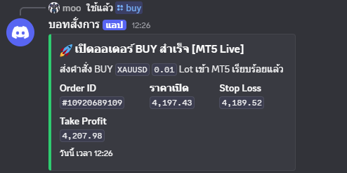
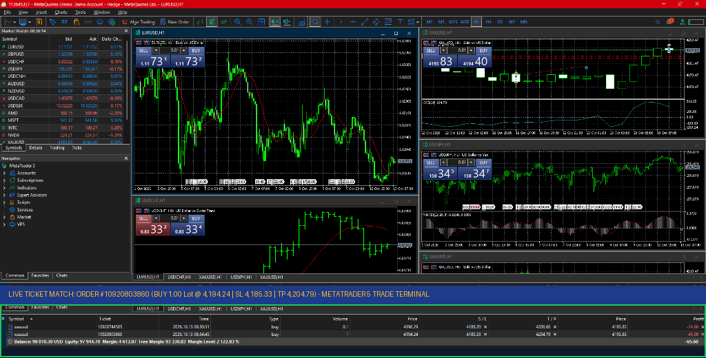
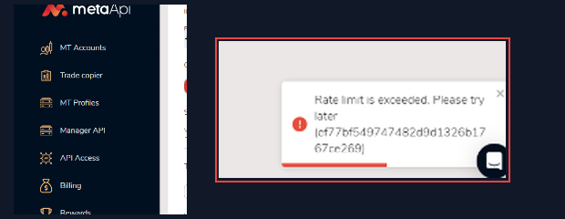
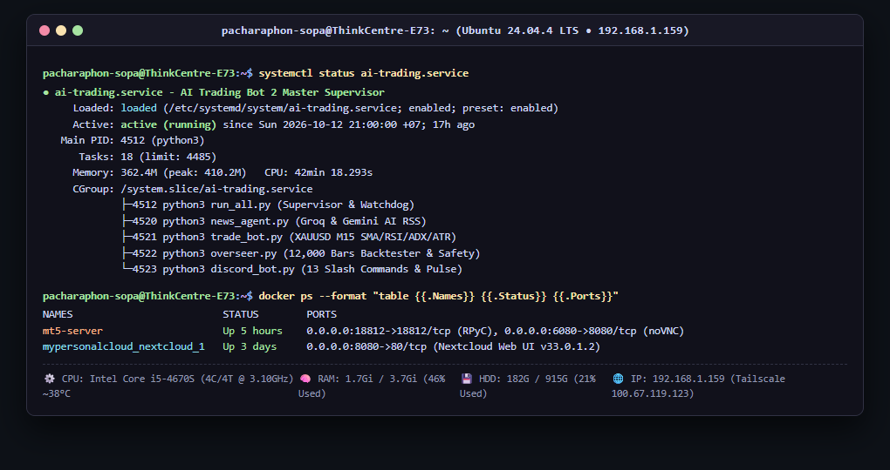
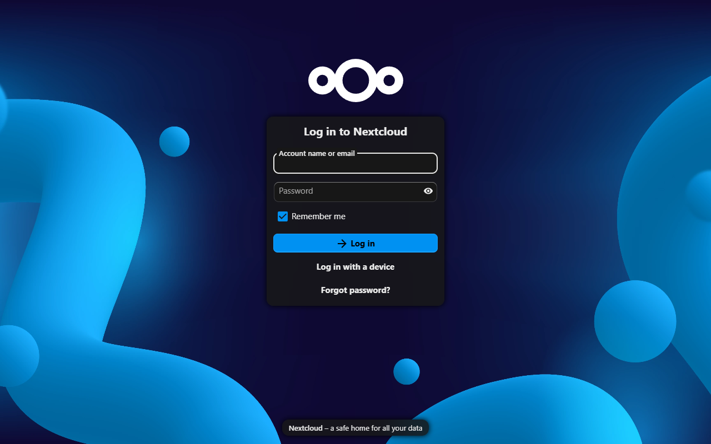
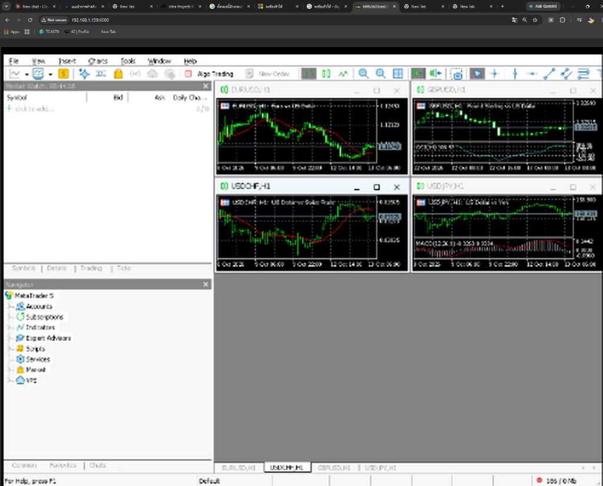
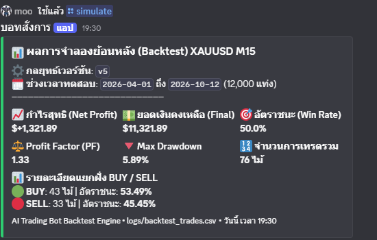

FULL SYSTEM ARCHITECTURE & SELF-HOSTED CLOUD PORTFOLIO • AI TRADING BOT 2
คู่มือสถาปัตยกรรมระบบบอทเทรดทองคำอัจฉริยะ (AI Trading Bot 2)
และเซิร์ฟเวอร์คลาวด์ส่วนตัว (Ubuntu Home Cloud, Nextcloud & Docker MT5)
เอกสารสรุปฉบับสมบูรณ์: ที่มาของไอเดีย • ผังเชื่อมต่อ 4 บอท • แคปรูปภาพโปรเจกต์จริง • เซิร์ฟเวอร์ Nextcloud & Docker • สถิติและบทพูดสัมภาษณ์
1. ที่มาและแรงบันดาลใจของโปรเจกต์ (ทำไมถึงคิดสร้างบอทตัวนี้ขึ้นมา?)
จุดเริ่มต้นของโปรเจกต์นี้เกิดจากประสบการณ์จริงในการเทรดกราฟการเงิน (หุ้นและทองคำ XAUUSD) ที่พบว่า การเทรดด้วยตัวเองมีปัญหาใหญ่ 3 ข้อ ที่ทำให้เสียทั้งสุขภาพจิตและเงินทุน จึงนำไปสู่การออกแบบระบบอัตโนมัติขึ้นมาแก้ปัญหาแบบตรงจุด:
😓 ปัญหาของการเทรดด้วยตัวเอง (Pain Points)
- นั่งเฝ้ากราฟตลอดจนล้าและเครียด: ตลาดทองคำวิ่ง 24 ชม. การเปิดดูทุก 15 นาทีทำให้พักผ่อนไม่พอและเสียสมาธิในการเรียน
- อารมณ์ความรู้สึกแทรกแซง (Emotional Trading): กลัวตกรถ (FOMO) รีบเข้าไม้ก่อนสัญญาณครบ หรือพอขาดทุนก็อยากเอาคืนจนไม่ยอมตั้ง Stop Loss
- อ่านข่าวโลกไม่ทัน: ข่าวสงคราม ดอกเบี้ย Fed และเงินเฟ้อสหรัฐฯ ออกช่วงดึกและเป็นภาษาอังกฤษ วิเคราะห์ไม่ทันความเร็วตลาด
🚀 ทางออกที่คิดค้นขึ้น (Autonomous AI Solution)
- บอทเทรดเชิงปริมาณไร้อารมณ์ (Quantitative): โปรแกรมคำนวณอินดิเคเตอร์ 4 ตัวรอบคอบ และเข้าเทรดเฉพาะเมื่อครบเงื่อนไข 100%
- สมอง AI อ่านข่าวแทนมนุษย์: ใช้ Groq AI เสริมด้วย Gemini คอยดึงข่าว RSS เศรษฐกิจโลกมาอ่านและคิดคะแนนทิศทางตลาดทุก 30 นาที
- รันบนโฮมคลาวด์ส่วนตัว + สั่งผ่าน Discord: รันบน Ubuntu Linux ร่วมกับ Docker MT5 และควบคุมผ่าน Discord บนมือถือ 24 ชั่วโมง
2. สถาปัตยกรรมระบบทั้งหมด (End-to-End Architecture)
ระบบถูกสร้างด้วยสถาปัตยกรรม Multi-Process Micro-Agents แยกบอท 4 ตัวตามหน้าที่ ประสานงานผ่านไฟล์สถานะกลาง (state/) และฐานข้อมูล (logs/):
แผนผังสถาปัตยกรรมการทำงานและการเชื่อมต่อข้อมูลทั้งหมด (System Architecture Flow)
1. แหล่งข่าวโลก (RSS)
Investing.com & CNBC
ดึงข่าวสดทุก ๆ 30 นาที
➔
2. สมอง AI วิเคราะห์ข่าว
Groq (Qwen/Llama-3.3)
สำรองด้วย Gemini Flash
➔
3. บอทข่าว (news_agent.py)
คิดคะแนน -1.0 ถึง +1.0
ลง state/sentiment.json
▼ ส่งคะแนนข่าว AI ช่วยกรองจังหวะเข้าเทรดทองคำ ▼
4. Docker MT5 บนคลาวด์
คอนเทนเนอร์ mt5-server
Wine + MT5 + RPyC (18812)
+ จอเว็บ noVNC (6080)
⇄
5. บอทเทรดหลัก (trade_bot.py)
กลยุทธ์ strategy.py (V5)
SMA 50, RSI 14, ADX 25, ATR 14
เสี่ยง 1% ต่อไม้ / เพดาน 3%
➔
6. ผู้ตรวจการณ์ (overseer.py)
ตรวจชีพจร Heartbeat ทุก 15 น.
จำลองย้อนหลัง 12,000 แท่ง
กลไกนิรภัย 7 ชั้น (Sandbox)
▼ รายงานชีพจรทุก 15 นาที & รับคำสั่งสองทางผ่านมือถือ ▼
7. ศูนย์สั่งการและแจ้งเตือนผ่าน Discord (discord_bot.py + notifier.py + Supreme Error Catcher)
ส่งการ์ดแจ้งเตือนเข้ามือถือทันที แปล Error ด้วย AI เป็นภาษาไทยสั้น ๆ • รองรับ Slash Commands 13 คำสั่ง

AUTHENTICภาพจริงจากแอป WinSCP (SFTP): โครงสร้างไฟล์โปรเจกต์ ai_trading_bot_2 บนเครื่อง Ubuntu Linux (192.168.1.159) แสดงไฟล์ระบบ ai-trading.service, run_all.py, โฟลเดอร์ state/, logs/ และ backups/
📁 การจัดการโค้ดบนเซิร์ฟเวอร์จริง (Production Files)
ดังที่แสดงในโปรแกรม WinSCP ทางซ้าย โค้ดทั้งหมดถูก Deploy ไว้ที่โฟลเดอร์ /home/pacharaphon-sopa/ai_trading_bot_2/:
ai-trading.service: ไฟล์ Systemd ควบคุมบริการรันตลอด 24 ชม.run_all.py: สคริปต์แม่บทดูแลบอทลูก 4 ตัวและฟื้นฟูเมื่อแครชstrategy.py: อัลกอริทึมคณิตศาสตร์ SMA 50, RSI 14, ADX 25, ATR 14state/: เก็บ sentiment.json, bot_heartbeat.json, market_pulse.jsonlogs/: เก็บประวัติการเทรด trades.csv และ Log แยกตามรายโมดูล
3. เจาะลึกการทำงานของบอททั้ง 4 ตัว และโมดูลเสริมทีละส่วน
0 ผู้จัดการทัพหลัก: run_all.py + Linux Service ai-trading.service
หน้าที่: ปลุกระบบขึ้นมาทันทีตั้งแต่เปิดเครื่องผ่าน systemd ของ Linux คอยสั่งเปิดบอททั้ง 4 ตัวขนานกัน พร้อมระบบ Auto-Restart Watchdog ตรวจทุก 5 วินาที หากบอทตัวไหนหยุดจะเปิดใหม่ใน 10 วินาที และมีระบบ Hot-Reload (state/restart.flag) สั่งรีโหลดพารามิเตอร์ผ่าน Discord โดยไม่ต้องดับระบบอื่น
1 บอทข่าว AI: news_agent.py
หน้าที่: อ่านข่าวเศรษฐกิจโลกตลอด 24 ชม. ดึง RSS จาก Investing.com & CNBC ทุก 30 นาที กรองข่าวซ้ำด้วย state/seen_news.json
ระบบ AI 2 ชั้น: ใช้ Groq API (เร็ว 0.3 วินาที) สลับใช้ Google Gemini อัตโนมัติ แปลงข่าวเป็นคะแนน -1.0 ถึง +1.0 พร้อมคำอธิบายภาษาไทย
2 บอทเทรดหลัก: trade_bot.py + strategy.py
หน้าที่: เฝ้ากราฟทองคำ XAUUSD ทุก 30 วินาที แต่คำนวณสูตรเฉพาะเมื่อ แท่ง M15 ปิดสมบูรณ์ (No Repainting) ผสานกับคะแนนข่าว AI
Market Pulse: รายงานราคา, อินดิเคเตอร์ และสถานะเข้า Discord ทุก 15 นาที พร้อมคุมความเสี่ยงเข้มงวด 1% ต่อไม้ และบันทึกผลลง logs/trades.csv
3 บอทเลขา & ศูนย์สั่งการ: discord_bot.py + notifier.py
หน้าที่: เชื่อมต่อมือถือผ่าน Discord Webhook & Slash Commands 13 คำสั่ง พร้อม Supreme Error Catcher สรุป Error เทคนิคเป็นภาษาไทยสั้น ๆ
4 ผู้ตรวจการณ์ & จำลองย้อนหลัง: overseer.py + simulator.py
หน้าที่: ตรวจชีพจร Heartbeat ทุก 15 นาที, ปลุก AI รีวิวกลยุทธ์หากแพ้ 4 ไม้ติด และรัน Backtest 12,000 แท่ง พร้อมกลไกความปลอดภัย 7 ชั้น (ห้ามแตะ .env)
ภาพหลักฐานศูนย์บัญชาการ Discord (Discord Command Center in Action)

ORDER 1.0 LOTคำสั่ง /buy 1.0 Lot: เปิดไม้ทองคำ XAUUSD ทันที Ticket #10920803860 ที่ราคา 4,194.24 พร้อม Stop Loss 4,186.33 และ Take Profit 4,204.79

POSITIONS TRACKINGคำสั่ง /positions: เช็คออเดอร์ค้างบน MT5 แบบเรียลไทม์ แสดง Balance $100,000, Equity $99,927, Floating PnL และรายการไม้ที่กำลังวิ่งอยู่

MICRO LOTคำสั่ง /buy 0.01 Lot: เปิดไม้นำร่อง Micro Lot Ticket #10920689109 ที่ราคา 4,197.43 (SL 4,189.52 / TP 4,207.98) พิสูจน์ความยืดหยุ่นในการคุมขนาด Lot
🛡️ ระบบ Supreme Error Catcher (AI Self-Healing & Thai Error Translator)
เมื่อโปรแกรมเกิด Error ทางเทคนิค ระบบจะไม่ส่ง Stack Trace ยาว ๆ ให้ผู้ใช้ตกใจ แต่จะส่งให้ AI (Groq/Gemini) วิเคราะห์เบื้องหลังและแปลงเป็น ภาษาไทยสั้น ๆ 1 ประโยค เช่น "ระบบตรวจพบตลาดปิดทำการช่วงวันหยุด จึงรอเวลาเปิดตลาดใหม่อัตโนมัติ" ทำให้ผู้ใช้งานทั่วไปเข้าใจสถานะของระบบได้ทันทีโดยไม่ต้องมีความรู้ด้านโค้ด
4. สมองกลยุทธ์การเทรด (Strategy V5) และการออกคำสั่งสู่ตลาดสด
📐 กฎการเข้าเทรด 5 เงื่อนไข (XAUUSD M15 Version 5)
- SMA 50 (กรองเทรนด์หลัก): ราคาปิดเหนือ SMA 50 มองหาเฉพาะ BUY / ราคาปิดใต้เส้นมองหาเฉพาะ SELL
- ADX 14 >= 25 (กรองไซด์เวย์): หาก ADX ต่ำกว่า 25 แปลว่ากราฟไร้เทรนด์ บอทจะสั่ง WAIT (งดออกไม้เด็ดขาด)
- RSI 14 ตัดระดับ 45 / 55 (หาจังหวะย่อ):
• BUY: เทรนด์ขึ้น + RSI ย่อต่ำกว่า 45 แล้วดีดตัดขึ้นผ่าน 45
• SELL: เทรนด์ลง + RSI เด้งเกิน 55 แล้วตบหลุดลงผ่าน 55
- AI News Sentiment Filter: ห้ามเปิด BUY หากข่าว AI ติดลบ (
< 0) และห้ามเปิด SELL หากข่าว AI เป็นบวก (> 0)
- ATR 14 Risk Management: SL
1.5 x ATR, TP 2.0 x ATR เสี่ยง 1% ต่อไม้ และเพดานตัดขาดทุนวันละ 3%
| คำสั่ง Discord (13 คำสั่ง) |
หน้าที่การทำงาน |
/status | เช็คชีพจรบอท 4 ตัว, ยอดเงิน, ราคาทอง, อินดิเคเตอร์ และข่าว AI |
/positions | ดูรายการออเดอร์ที่ถือค้างอยู่ในพอร์ตและกำไรลอยตัว |
/buy & /sell | สั่งเปิดออเดอร์ทันทีพร้อมคำนวณ SL/TP อัตโนมัติ |
/close [ticket] | สั่งปิดออเดอร์ตามหมายเลขตั๋วหรือปิดรวดเดียวทั้งหมด |
/pause & /resume | สั่งหยุดเทรดอัตโนมัติชั่วคราว หรือสั่งให้บอทกลับมาเดินเครื่องต่อ |
/simulate [bars] | รัน Backtest จำลอง 12,000 แท่งและส่งผลสรุปเข้าแชท |
/config | ดูค่าพารามิเตอร์และกฎบริหารความเสี่ยงปัจจุบันทั้งหมด |
/set_timeframe | เปลี่ยนไทม์เฟรมกราฟ (M1, M5, M15, M30, H1, H4, D1) |
/set_symbol | เปลี่ยนคู่เงินเทรด (เช่น XAUUSD, BTCUSD) แล้วรีสตาร์ทบอท |
/set_risk & /help | ปรับ % ความเสี่ยงต่อไม้ (สูงสุด 5%) และดูคู่มือคำสั่งทั้งหมด |
หลักฐานการทำงานจริงบนหน้าจอ MetaTrader 5 (Live Order Matched with Discord)

AUTHENTIC EVIDENCEการประมวลผลคำสั่งจริงบน MetaTrader 5 (พอร์ต MetaQuotes-Demo #113645327): แสดงตั๋วออเดอร์ #10920803860 ซื้อทองคำ 1.00 Lot ที่ราคา 4,194.24 (SL 4,185.33 / TP 4,204.79) ในหน้าต่าง Terminal ด้านล่าง ตรงกับคำสั่ง /buy บน Discord ในหน้า 2 ทุกประการ พิสูจน์ว่าระบบเชื่อมโยงและส่งคำสั่งเข้าสู่เซิร์ฟเวอร์ตลาดได้จริง 100%

PROBLEM SOLVEDที่มาของการสร้างระบบ Docker MT5 ส่วนตัว: เดิมทีระบบพยายามใช้บริการคลาวด์ MetaApi แต่ติดปัญหา "Rate limit is exceeded" และมีค่าบริการรายเดือน จึงตัดสินใจสร้างระบบเซิร์ฟเวอร์ Docker MT5 + RPyC ขึ้นเอง
💡 การเปลี่ยนวิกฤตเป็นนวัตกรรม (Engineering Resilience)
จากภาพหน้าจอ MetaApi ทางซ้าย แสดงข้อความแจ้งเตือน "Rate limit is exceeded. Please try later" ทำให้การส่งคำสั่งติดขัดและมีความเสี่ยงสูง
ทีมพัฒนาจึงเปลี่ยนมาใช้แนวทาง Self-Hosted Docker Architecture โดยนำ terminal64.exe มารันในคอนเทนเนอร์บน Linux ผ่าน Wine และเปิดท่อ RPyC พอร์ต 18812 ทำให้สั่งเทรดได้รวดเร็ว ปลอดภัย ไร้ขีดจำกัด และประหยัดค่าใช้จ่ายได้ 100%
5. เจาะลึกเครื่องเซิร์ฟเวอร์คลาวด์ส่วนตัว (Ubuntu Home Cloud Server)
แทนที่จะเสียเงินเช่า VPS รายเดือน โปรเจกต์นี้สร้าง เซิร์ฟเวอร์คลาวด์ส่วนตัว (Self-Hosted Home Cloud Server) โดยนำเครื่อง Lenovo ThinkCentre E73 มาติดตั้ง Ubuntu 24.04.4 LTS และใช้ Docker Container แบ่งสัดส่วนการทำงานระหว่างคลาวด์เก็บข้อมูลส่วนตัว (Nextcloud) และเซิร์ฟเวอร์เทรดตลอด 24 ชั่วโมง
5.1 สเปกฮาร์ดแวร์จริงและการใช้ทรัพยากร (Lenovo ThinkCentre E73 @ 192.168.1.159)
| หมวดหมู่ |
รายละเอียดสเปกจริงและการใช้งานทรัพยากรของเครื่องเซิร์ฟเวอร์ |
| เครื่อง & รุ่น |
Hostname: pacharaphon-sopa-ThinkCentre-E73 • รุ่นเครื่อง: Lenovo ThinkCentre E73 (Desktop Chassis) |
| ระบบปฏิบัติการ |
Ubuntu 24.04.4 LTS (Noble Numbat) x86_64 • เคอร์เนล Linux รุ่น 7.0.0-38-generic |
| หน่วยประมวลผล (CPU) |
Intel(R) Core(TM) i5-4670S @ 3.10GHz (4 Cores / 4 Threads, Turbo 3.80 GHz) • อุณหภูมิเย็นเฉลี่ยเพียง ~38°C – 39°C |
| หน่วยความจำ (RAM) |
• Physical RAM: 4 GB DDR3 @ 1333 MT/s (มองเห็น 3.7 GiB มีสล็อตว่างอัปเกรดได้ถึง 16 GB)
• ใช้งานจริง: รันทั้ง Nextcloud + Docker MT5 + บอท 4 ตัว ใช้ RAM รวมเพียง 1.5 GiB (เหลือว่าง 2.2 GiB) + Swap 3.7 GiB |
| พื้นที่จัดเก็บ (Storage) |
• ดิสก์หลัก /dev/sda: WD Blue 1TB HDD (WD10EZEX, 931.5 GB) พาร์ติชัน / ext4 (ใช้ไป 182 GB หรือ 21%, เหลือว่าง 687 GB)
• ดิสก์เสริม /dev/sdb: Hikvision SSD 240GB เก็บพาร์ติชันระบบ Windows 10 เดิม |
| ระบบเครือข่าย |
Gigabit LAN (Realtek RTL8111/8168, IP 192.168.1.159) + เครือข่าย VPN ส่วนตัว Tailscale (100.67.119.123) + OpenSSH พอร์ต 22 |
หลักฐานสถานะการทำงานจริงบน Terminal (Live Ubuntu Terminal Screenshot)

LIVE TERMINALภาพแคปหน้าจอ Terminal ของเซิร์ฟเวอร์ Ubuntu จริง: แสดงสถานะบริการ ai-trading.service รันเป็นปกติ (Active: running) พร้อมโปรเซสบอทลูกทั้ง 4 ตัว และสถานะคอนเทนเนอร์ mt5-server และ mypersonalcloud_nextcloud_1 ที่เปิดทำงานต่อเนื่อง
5.2 รายการคอนเทนเนอร์ Docker ทั้งหมดในเซิร์ฟเวอร์ (docker ps)
| ชื่อคอนเทนเนอร์ |
Docker Image |
พอร์ตที่เปิด (Port Mapping) |
สถานะและหน้าที่การทำงาน |
mt5-server |
lprett/mt5linux:latest |
18812->18812 (RPyC)
6080->8080 (noVNC) |
Up (ทำงาน 24/7): รันโปรแกรม Windows MT5 บน Linux ผ่าน Wine + Xvfb ให้บอทสั่งเทรดตรง |
mypersonalcloud_nextcloud_1 |
nextcloud:latest |
8080->80/tcp (Web UI) |
Up (ทำงาน 24/7): ระบบ Nextcloud v33.0.1.2 (Private Cloud 1TB เก็บข้อมูลจริง 162 GB) |
🔒 ระบบเครือข่ายความปลอดภัยสูงระดับ Zero-Trust (Tailscale Mesh VPN)
เซิร์ฟเวอร์คลาวด์ตัวนี้ไม่ได้เปิด Forward Port สาธารณะบนเราเตอร์บ้าน เพื่อป้องกันการถูกโจมตีทางอินเทอร์เน็ต แต่ใช้เทคโนโลยี Tailscale Mesh VPN (IP 100.67.119.123) ซึ่งสร้างท่ออุโมงค์เข้ารหัส WireGuard สองทางระหว่างมือถือ คอมพิวเตอร์โน้ตบุ๊ก และเซิร์ฟเวอร์ ทำให้เราสามารถสั่งการ SSH, ดูกราฟ noVNC และเข้าใช้งาน Nextcloud ได้จากภายนอกบ้านอย่างปลอดภัย 100%
5.3 เจาะลึก 2 ระบบหลักบนโฮมคลาวด์: Nextcloud และ noVNC Docker MT5
☁️ 1. Nextcloud (หรือที่เรียกติดปากว่า "Nexus Cloud")
คืออะไร: ระบบคลาวด์เก็บไฟล์ส่วนตัว Nextcloud (v33.0.1.2) ติดตั้งผ่าน Docker Compose บนพอร์ต 8080 ทำหน้าที่เป็น Google Drive ส่วนตัวขนาด 1TB โดยไม่มีค่าบริการรายเดือน
- โครงสร้าง All-in-One ประหยัด RAM: ใช้
Apache2 + PHP 8.4.19 + SQLite3 ในตัว จึงไม่ต้องรัน MariaDB/Redis ช่วยให้กิน RAM น้อยมาก
- เก็บข้อมูลจริง 162 GB: เก็บโฟลเดอร์
paer/ (113 GB), แบ็คอัปมือถือ ไฟล์ทรศ/ (29 GB), ไฟล์ดาวน์โหลด และม็อดเกม AI เชื่อมต่อกับ nextcloud_bridge.py
🐳 2. คอนเทนเนอร์ mt5-server + noVNC Web Display
แก้ปัญหา Windows App บน Linux: โปรแกรม MetaTrader 5 รันได้เฉพาะบน Windows เราจึงนำมารันใน Docker ผ่าน 5 กลไกทางวิศวกรรม:
- Wine + Xvfb: จำลองระบบ Windows และสร้างหน้าจอเสมือน 1920x1080 ใน RAM
- noVNC (พอร์ต 6080): แปลงหน้าจอ MT5 ออกมาเป็นหน้าเว็บ ดูสดได้ทุกที่
- xdotool Automation: ล็อกอินพอร์ตและเปิด Algo Trading อัตโนมัติ
- RPyC Server (พอร์ต 18812): ท่อส่งคำสั่งความเร็วสูงให้ Python สั่งเทรดตรงฟรี 0 บาท
ภาพหลักฐานระบบ Nextcloud และ noVNC MetaTrader 5 ที่เปิดทำงานจริง

LIVE WEB UIหน้าจอระบบ Nextcloud v33.0.1.2 บนพอร์ต 8080 (http://192.168.1.159:8080): พอร์ทัลเข้าสู่ระบบ Private Cloud Storage ส่วนตัวขนาด 1TB ที่ติดตั้งบน Docker ของเครื่องเซิร์ฟเวอร์ ให้บริการซิงค์ไฟล์เอกสารและสำรองข้อมูลจากอุปกรณ์ต่าง ๆ ได้อย่างปลอดภัย

LIVE WEB VNCหน้าจอ noVNC Web UI (พอร์ต 6080): เปิดหน้าจอ MT5 ที่รันอยู่ใน Docker บนเบราว์เซอร์ผ่านพอร์ต http://192.168.1.159:6080 แสดงแท็บคอนเทนเนอร์ 66fb3b03ced2 และหน้าต่างกราฟ 4 คู่เงิน

INDICATORS SETUPการตั้งค่าอินดิเคเตอร์ใน Docker MT5: เมนูตั้งค่า ADX (Average Directional Movement Index Wilder) ภายในหน้าต่าง MT5 เสมือนบน Ubuntu Linux
🔄 การผสาน 2 ระบบคลาวด์เป็นระบบนิเวศเดียวกัน (Unified Cloud Ecosystem)
Nextcloud และ Docker MT5 แม้จะมีจุดประสงค์การใช้งานที่ต่างกัน แต่สามารถแชร์ฮาร์ดแวร์ Lenovo เครื่องเดียวกันได้อย่างคุ้มค่า โดยใช้ RAM รวมเพียง 1.5 GiB เท่านั้น นอกจากนี้ บอทเทรดยังสามารถส่งรายงานผลสรุปไฟล์ CSV และภาพกราฟย้อนหลังไปสำรองเก็บไว้ในโฟลเดอร์ของ Nextcloud โดยอัตโนมัติ ทำให้ข้อมูลสำคัญไม่สูญหาย
6. ผลการทดสอบ Backtest, สถิติความคืบหน้า (~92%), ข้อจำกัด และการเตรียมสัมภาษณ์
6.1 ผลการทดสอบย้อนหลัง (Backtest 12,000 แท่งเทียน บนทองคำ XAUUSD M15)
ผลการทดสอบย้อนหลัง 12,000 แท่งเทียน (Train 70% / Validation 30%) ทุนเริ่มต้น $10,000 เสี่ยง 1% ต่อไม้ ของกลยุทธ์ Version 5:
+$1,321.89
กำไรสุทธิ (+13.22% พอร์ตเป็น $11,321.89)
50.00%
อัตราชนะรวม 76 ไม้ (BUY ชนะ 53.49%)
1.33
Profit Factor (กำไรมากกว่าขาดทุน 1.33 เท่า)
5.89%
Max Drawdown (ย่อตัวต่ำ ปลอดภัยมาก)

BACKTEST VERIFIEDรายงานจริงจากคำสั่ง /simulate บน Discord: ยืนยันผล Backtest 12,000 แท่ง กำไรสุทธิ +$1,321.89 Win Rate 50.0% Max DD 5.89% ตรงกับสถิติทุกประการ
6.2 เปอร์เซ็นต์ความคืบหน้าของโปรเจกต์แยกตามหมวดหมู่ (ภาพรวมเสร็จสมบูรณ์ ~92%)
| หมวดหมู่ของงาน |
ความคืบหน้า |
รายละเอียดสถานะปัจจุบัน |
| 1. โครงสร้างคลาวด์ & Docker MT5 |
100% |
ติดตั้ง Ubuntu, Nextcloud, Docker mt5-server, RPyC 18812, noVNC 6080 และ Systemd สำเร็จ |
| 2. บอทเทรด & กลยุทธ์ 4 อินดิเคเตอร์ |
100% |
พัฒนา SMA 50, RSI 14, ADX 25, ATR 14, คำนวณ Lot เสี่ยง 1% และตัดวงจรขาดทุนรายวัน 3% เสร็จสมบูรณ์ |
| 3. AI วิเคราะห์ข่าว & Overseer |
100% |
เชื่อม RSS + Groq/Gemini AI, ตรวจชีพจร Heartbeat, Backtest 12,000 แท่ง และ Sandbox 7 ชั้นสมบูรณ์ |
| 4. ศูนย์สั่งการ Discord 13 คำสั่ง |
100% |
ส่งรายงาน Market Pulse ทุก 15 นาที, แปล Error ด้วย AI และสั่งงานผ่าน Slash Commands ได้ครบถ้วน |
| 5. เก็บสถิติเทรดตลาดสด (Forward Test) |
~50% (เริ่มต้น) |
เชื่อมพอร์ต Demo (#113645327) ออกออเดอร์จริงแล้ว อยู่ระหว่างเปิดรันต่อเนื่องเพื่อสะสมสถิติจำนวนไม้ |
⚠️ ข้อเสียและข้อจำกัดของโปรเจกต์ (อย่างตรงไปตรงมา)
- ยังไม่เคยเทรดเงินจริง และยังไม่ได้กำไรจากการเทรดสด: ปัจจุบันรันบนพอร์ตทดลอง (Demo) มีออเดอร์นำร่องที่ปิดไปแล้ว 1 ไม้ จึงยังอยู่ในช่วงทดลองเดินเครื่อง
- ต้องใช้เวลาสะสมสถิติ 3–6 สัปดาห์: กลยุทธ์ V5 คัดกรองสัญญาณเข้มข้นมาก ออกออเดอร์เฉลี่ยเพียง 1 ไม้ทุก 1.5–2 วัน จึงต้องอาศัยเวลาสะสมจำนวนไม้
- ข้อจำกัดโฮมคลาวด์: พึ่งพาไฟ/เน็ตบ้าน (แต่ป้องกันด้วยการฝัง SL/TP ไว้ที่โบรกเกอร์ทันทีและมี Auto-Restart)
🎯 แผนการและความพร้อมในวันสัมภาษณ์ (Road to Interview)
- เปิดรันสะสมผลลัพธ์ 24 ชม.: ขณะนี้ระบบกำลังทำงานจริงบนคลาวด์ จะคอยเฝ้ากราฟและสะสมออเดอร์ในพอร์ต Demo ต่อเนื่องจนถึงวันสัมภาษณ์
- พร้อมนำเสนอสถิติจริง: เมื่อถึงวันสัมภาษณ์ จะมีประวัติใน
logs/trades.csv มากขึ้น และคาดว่าจะเริ่มเห็นกำไรตามค่าคาดหวัง (+13.2% จาก Backtest)
- โชว์การทำงานสด (Live Demo): เปิดแอป Discord กด
/status, /positions และเปิดหน้าเว็บ noVNC (พอร์ต 6080) โชว์หน้าจอ MT5 บน Ubuntu ให้กรรมการดูได้ทันที
🎤 บทสรุปสำหรับเล่าให้กรรมการฟังตอนสัมภาษณ์ (เข้าใจง่าย ครบถ้วนใน 2–3 นาที)
"โปรเจกต์นี้คือระบบบอทเทรดทองคำอัตโนมัติ (AI Trading Bot 2) ที่สร้างขึ้นเพราะเวลาเราเทรดเอง มักเจอปัญหานั่งเฝ้ากราฟจนล้า มีอารมณ์กลัวตกรถแทรกแซง และอ่านข่าวโลกไม่ทัน จึงออกแบบระบบบอท 4 ตัวที่ทำงานร่วมกันบนคลาวด์ส่วนตัวครับ/ค่ะ โดย 1. บอทข่าว AI (news_agent) ดึงข่าว RSS ทุก 30 นาทีส่งให้ Groq และ Gemini วิเคราะห์คะแนนทิศทางตลาด 2. บอทเทรด (trade_bot & strategy) เฝ้ากราฟ M15 ด้วยอินดิเคเตอร์ 4 ตัว (SMA 50, ADX 25, RSI 14, ATR 14) เสี่ยง 1% ต่อไม้ 3. บอท Discord (discord_bot & notifier) คอยแจ้งเตือนเข้ามือถือทุก 15 นาที แปล Error ด้วย AI เป็นภาษาไทย และรับคำสั่ง Slash Commands 13 คำสั่ง และ 4. ผู้ตรวจการณ์ (overseer & simulator) คอยตรวจชีพจรบอทและทดสอบย้อนหลัง 12,000 แท่ง
ส่วนฝั่งคลาวด์ เรานำคอมพิวเตอร์ Lenovo ThinkCentre E73 (Core i5, RAM 4GB, HDD 1TB) มาลง Ubuntu 24.04 ทำเป็นโฮมคลาวด์ส่วนตัว รัน Nextcloud บน Docker เป็นคลาวด์เก็บไฟล์ 1TB แทน Google Drive และรัน MT5 บน Docker ผ่าน Wine เชื่อมต่อ RPyC ทำให้เปิดได้ 24 ชม. ฟรี 0 บาท ผล Backtest 12,000 แท่งทำกำไรได้ +13.2% (Drawdown ต่ำเพียง 5.89%) ปัจจุบันกำลังเปิดรันสะสมสถิติจริงบนพอร์ต Demo เพื่อเตรียมนำเสนอและโชว์ Live Demo ให้กรรมการดูในวันสัมภาษณ์ครับ/ค่ะ"